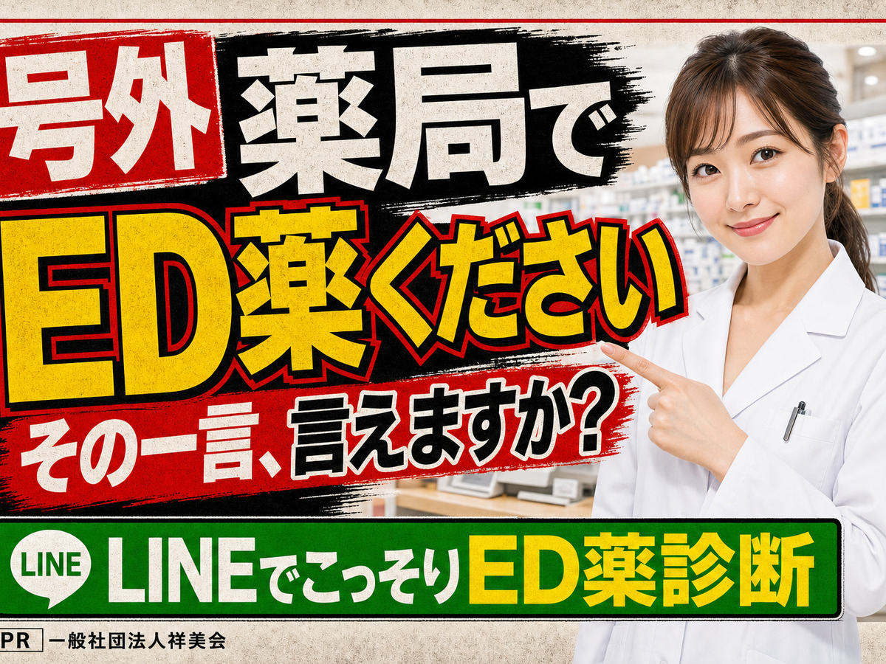
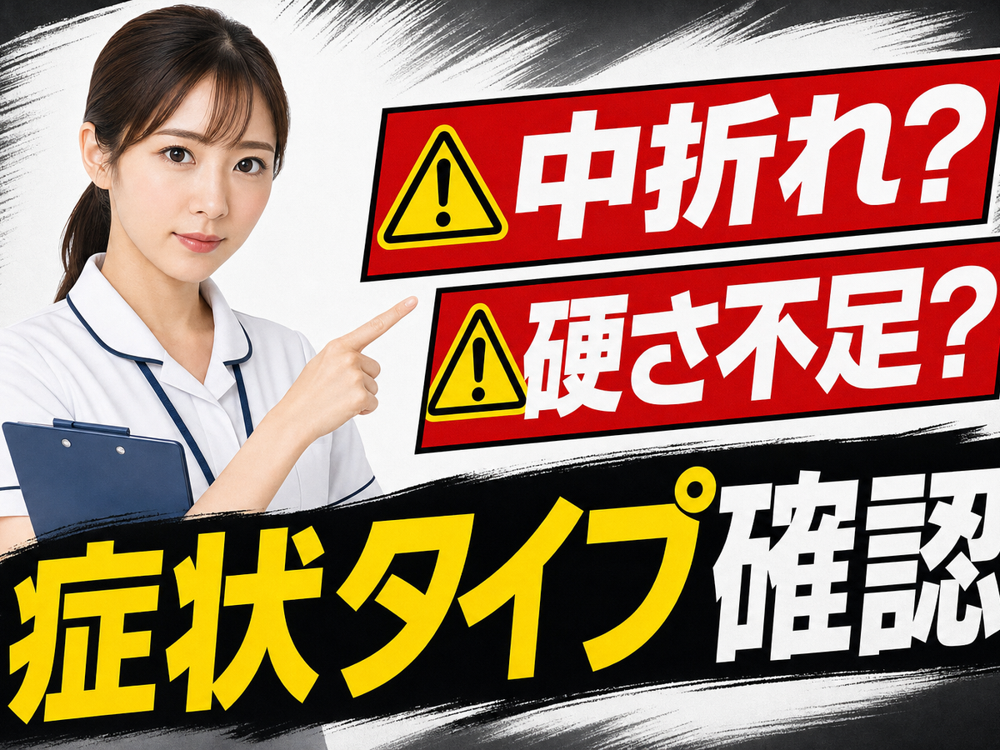
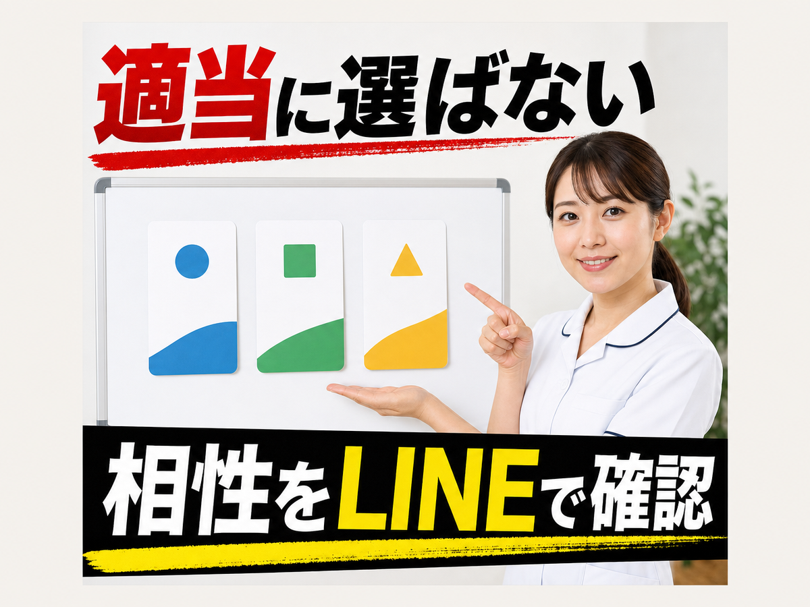
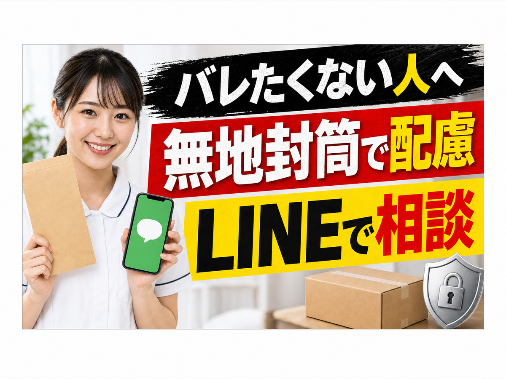
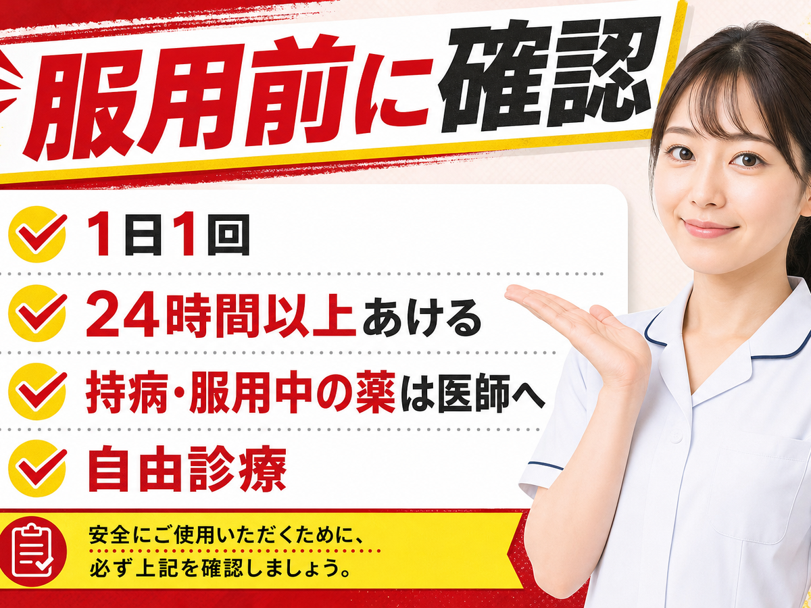

7月、ED薬が薬局へ
でも店頭で
LINEでこっそり薬診断をする無料お薬診断 / 3分で確認
でも店頭で
言えるか問題、勃発。
薬剤師にチェック結果を見せる前に。まずはLINEで、こっそり薬診断。
病院も薬局も気まずい。
でも放置はもっと気まずい。
中折れ、硬さ不足、いざ本番の不安。いきなり購入ではなく、まず3問で悩みタイプを確認してください。
Q1
いちばん困るのは？

↓
Q2
薬選びで不安なのは？

↓
Q3
バレたくない不安は？

↓
回答を見る限り、薬を適当に選ぶ前に確認です。
見るべきは「相性」「正規性」「バレにくさ」。国内正規ジェネリック3種から、医師診療のもとで選択肢を確認できます。
国内正規
ジェネリック
ジェネリック
医師診療
無地封筒で
配送配慮
配送配慮
LINEで
相談
相談
LINE追加後、まず無料お薬診断へ。
10錠以上購入で最大6錠追加。価格・薬剤・配送条件は診療/公式LINE内で確認してください。

確認事項
- ED治療薬は医師の診療に基づき処方されます。服用中のお薬、持病、既往歴がある場合は必ず医師へご相談ください。
- ED治療薬は1日1回まで、次回使用まで24時間以上あけてください。
- 副作用として、ほてり、動悸、頭痛、めまい等が起きる場合があります。異常を感じた場合は使用を中止し、医師へ相談してください。
- 10錠以上購入で最大6錠追加の条件、価格、配送、支払い方法は公式LINEおよび診療時の案内をご確認ください。